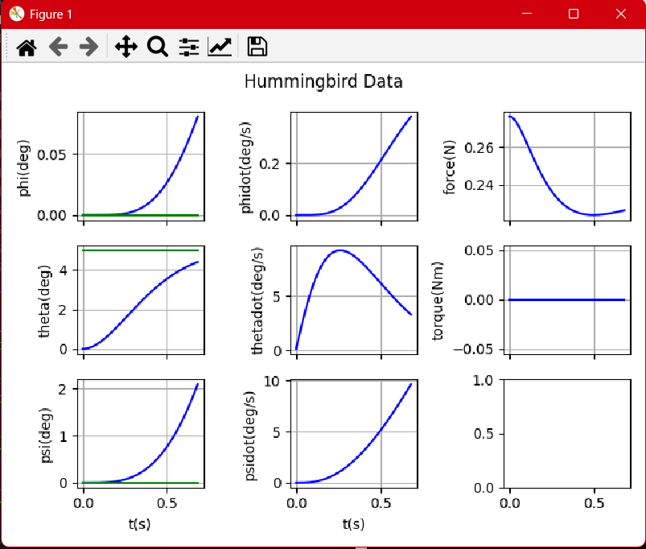
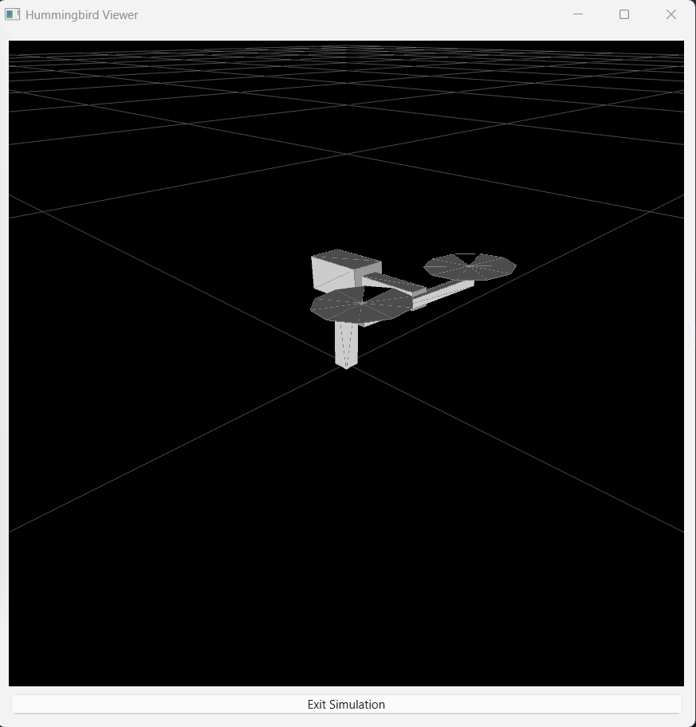
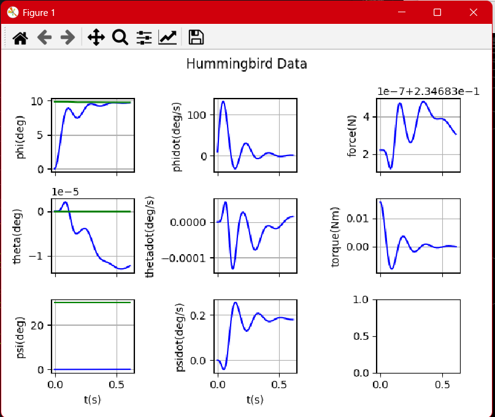
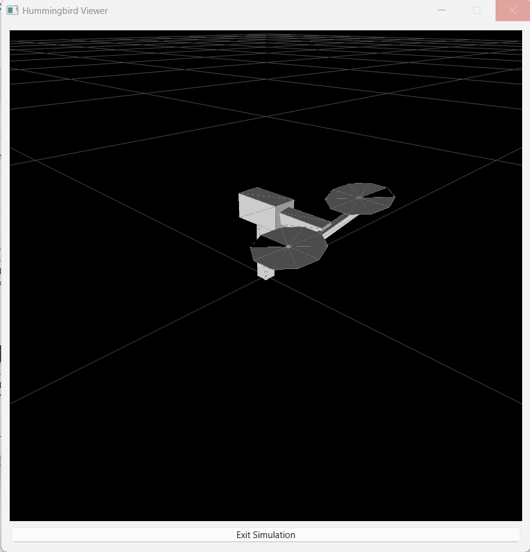

Overview
This note summarizes the PD designs used in Lab 3 for the hummingbird simulation and records the specific formulas used to compute gains from time-domain specs. All math is LaTeX to render correctly when exported to PDF (tested with pandoc and typical VS Code PDF exporters that support MathJax/KaTeX).
Models
Longitudinal (about θ e = 0 \theta_e=0 θ e = 0
θ ~ ′ ′ ( t ) = b θ F ~ ( t ) , b θ = ℓ T m 1 ℓ 1 2 + m 2 ℓ 2 2 + J 1 y + J 2 y , F e = ( m 1 ℓ 1 + m 2 ℓ 2 ) g ℓ T . \begin{aligned}
\tilde\theta''(t) &= b_\theta\,\tilde F(t),\\
b_\theta &= \dfrac{\ell_T}{m_1\ell_1^2 + m_2\ell_2^2 + J_{1y} + J_{2y}},\\
F_e &= \dfrac{(m_1\ell_1 + m_2\ell_2)\,g}{\ell_T}.
\end{aligned} θ ~ ′′ ( t ) b θ F e = b θ F ~ ( t ) , = m 1 ℓ 1 2 + m 2 ℓ 2 2 + J 1 y + J 2 y ℓ T , = ℓ T ( m 1 ℓ 1 + m 2 ℓ 2 ) g .
Lateral (successive loop closure, inner roll faster than outer yaw):
ϕ ′ ′ ( t ) = 1 J 1 x τ ( t ) , ψ ′ ′ ( t ) ≈ b ψ ϕ ( t ) , b ψ ≈ ℓ T F e J z z , eq , J z z , eq = m 1 ℓ 1 2 + m 2 ℓ 2 2 + J 2 z + J 1 z + m 3 ( ℓ 3 x 2 + ℓ 3 y 2 ) + J 3 z . \begin{aligned}
\phi''(t) &= \frac{1}{J_{1x}}\,\tau(t),\\
\psi''(t) &\approx b_\psi\,\phi(t),\quad b_\psi \approx \frac{\ell_T F_e}{J_{zz,\text{eq}}},\\
J_{zz,\text{eq}} &= m_1\ell_1^2 + m_2\ell_2^2 + J_{2z} + J_{1z} + m_3(\ell_{3x}^2 + \ell_{3y}^2) + J_{3z}.
\end{aligned} ϕ ′′ ( t ) ψ ′′ ( t ) J zz , eq = J 1 x 1 τ ( t ) , ≈ b ψ ϕ ( t ) , b ψ ≈ J zz , eq ℓ T F e , = m 1 ℓ 1 2 + m 2 ℓ 2 2 + J 2 z + J 1 z + m 3 ( ℓ 3 x 2 + ℓ 3 y 2 ) + J 3 z .
Dirty Derivative (First-Order Filtered Difference)
For any signal x x x
x ˙ ^ [ k ] = α x ˙ ^ [ k − 1 ] + ( 1 − α ) x [ k ] − x [ k − 1 ] T s , α = τ d τ d + T s . \begin{aligned}
\hat{\dot x}[k] &= \alpha\,\hat{\dot x}[k-1] + (1-\alpha)\,\frac{x[k]-x[k-1]}{T_s},\\
\alpha &= \frac{\tau_d}{\tau_d + T_s}.
\end{aligned} x ˙ ^ [ k ] α = α x ˙ ^ [ k − 1 ] + ( 1 − α ) T s x [ k ] − x [ k − 1 ] , = τ d + T s τ d .
Gain Mapping from Specs
With desired ζ \zeta ζ t r t_r t r
ω n ≈ 2.2 t r . \omega_n \approx \frac{2.2}{t_r}. ω n ≈ t r 2.2 .
k P θ = ω n θ 2 b θ , k D θ = 2 ζ θ ω n θ b θ . k_{P_\theta} = \frac{\omega_{n\theta}^2}{b_\theta},\quad
k_{D_\theta} = \frac{2\zeta_\theta\,\omega_{n\theta}}{b_\theta}. k P θ = b θ ω n θ 2 , k D θ = b θ 2 ζ θ ω n θ .
k P ϕ = ω n ϕ 2 J 1 x , k D ϕ = 2 ζ ϕ ω n ϕ J 1 x . k_{P_\phi} = \omega_{n\phi}^2 J_{1x},\quad
k_{D_\phi} = 2\zeta_\phi\,\omega_{n\phi} J_{1x}. k P ϕ = ω n ϕ 2 J 1 x , k D ϕ = 2 ζ ϕ ω n ϕ J 1 x .
k P ψ = ω n ψ 2 b ψ , k D ψ = 2 ζ ψ ω n ψ b ψ . k_{P_\psi} = \frac{\omega_{n\psi}^2}{b_\psi},\quad
k_{D_\psi} = \frac{2\zeta_\psi\,\omega_{n\psi}}{b_\psi}. k P ψ = b ψ ω n ψ 2 , k D ψ = b ψ 2 ζ ψ ω n ψ .
Bandwidth Separation
Choose inner-loop roll at least one order faster than yaw:
ω n ϕ = M ω n ψ , M ∈ [ 10 , 20 ] . \omega_{n\phi} = M\,\omega_{n\psi},\quad M \in [10,20]. ω n ϕ = M ω n ψ , M ∈ [ 10 , 20 ] .
Control Laws (PD Only)
e θ = θ d − θ , e ˙ ^ θ = − θ ˙ ^ , F ~ = k P θ e θ + k D θ e ˙ ^ θ , F = F e + F ~ . \begin{aligned}
e_\theta &= \theta_d - \theta,\\
\widehat{\dot e}_\theta &= -\,\widehat{\dot\theta},\\
\tilde F &= k_{P_\theta} e_\theta + k_{D_\theta}\,\widehat{\dot e}_\theta,\\
F &= F_e + \tilde F.
\end{aligned} e θ e ˙ θ F ~ F = θ d − θ , = − θ ˙ , = k P θ e θ + k D θ e ˙ θ , = F e + F ~ .
e ψ = ψ d − ψ , e ˙ ^ ψ = − ψ ˙ ^ , ϕ d = k P ψ e ψ + k D ψ e ˙ ^ ψ . e_\psi = \psi_d - \psi,\quad \widehat{\dot e}_\psi = -\,\widehat{\dot\psi},\quad
\phi_d = k_{P_\psi} e_\psi + k_{D_\psi}\,\widehat{\dot e}_\psi. e ψ = ψ d − ψ , e ˙ ψ = − ψ ˙ , ϕ d = k P ψ e ψ + k D ψ e ˙ ψ .
Inner roll (commands torque):
e ϕ = ϕ d − ϕ , e ˙ ^ ϕ = − ϕ ˙ ^ , τ = k P ϕ e ϕ + k D ϕ e ˙ ^ ϕ . e_\phi = \phi_d - \phi,\quad \widehat{\dot e}_\phi = -\,\widehat{\dot\phi},\quad
\tau = k_{P_\phi} e_\phi + k_{D_\phi}\,\widehat{\dot e}_\phi. e ϕ = ϕ d − ϕ , e ˙ ϕ = − ϕ ˙ , τ = k P ϕ e ϕ + k D ϕ e ˙ ϕ .
Simulation Notes
H.7: Step θ d \theta_d θ d ± 5 ∘ \pm5^\circ ± 5 ∘ F F F F e F_e F e
H.8: Step ψ d \psi_d ψ d 30 ∘ 30^\circ 3 0 ∘ M M M
How to Run
From the repository root (recommended to ensure imports resolve):
python -m _hummingbird_sim.h7_hummingbirdSim
python -m _hummingbird_sim.h8_hummingbirdSim
Or from the directory itself (matches current import style):
cd _hummingbird_sim
python h7_hummingbirdSim.py
python h8_hummingbirdSim.py
Python version used during development: 3.13. If matplotlib/pyqt are missing, install from the repo root:
python -m pip install --user -r requirements.txt
GUI Simulation Output from H.7 & H.8../figs/ relative to this Markdown file (as you currently have in the repo). The YAML header sets a LaTeX \graphicspath and a Pandoc resource-path so PDF export can find them even if you run Pandoc from the repo root.
H.7 - Longitudinal PD (Pitch)


H.8 - Lateral PD (Yaw/Roll)


Tip: In matplotlib windows you can use the save icon, or temporarily add plt.savefig('figs/h7_theta.png', dpi=200, bbox_inches='tight') near the end of the script.
Repo Map (for this lab)
Controllers: ctrlLonPD.py, ctrlPD.py
Sims/plots: h7_hummingbirdSim.py, h8_hummingbirdSim.py, dataPlotter.py
Dynamics/params: hummingbirdDynamics.py, hummingbirdParam.py, signalGenerator.py
This report: Lab3_Review.md, lessons: Lab3_Learned.txt
Troubleshooting
If you see OpenGL/pyqtgraph warnings during animation, they are typically harmless on headless or constrained GPUs.
If _hummingbird_sim imports fail when using -m, run from inside the folder with python h7_hummingbirdSim.py.